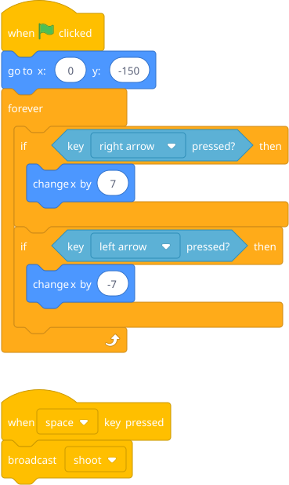
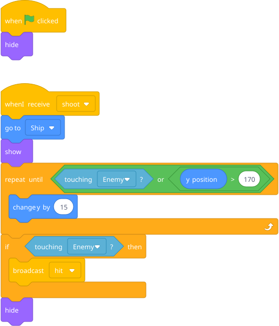
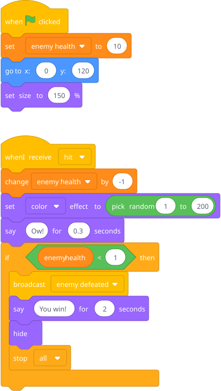
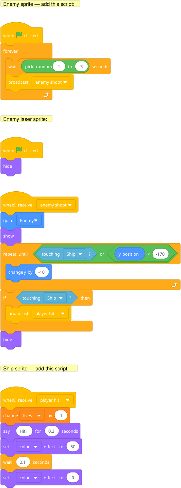

Problem: "When the player's laser hits the enemy, the enemy should lose health. But the laser is one sprite and the enemy is another. How does the enemy know it got hit?"
Introduce broadcast and when I receive. Build a simple space shooter: ship at bottom, enemy at top, pressing space shoots a laser, when laser touches enemy → broadcast → enemy receives it, reduces health variable.
Prep: Three sprites — a ship, a laser (small rectangle), and an enemy. Two variables: enemy health, score.
Ship sprite:

Laser sprite:

Enemy sprite:

Blocks to point out: broadcast is under Events — it sends a message that any sprite can listen for. when I receive is also under Events — it's a hat block like when green flag clicked. The laser doesn't need to "know" about the enemy's health. It just shouts "hit!" and the enemy handles the rest. That separation is the whole point.
Key insight: Sprites are independent actors. They don't automatically know about each other. Broadcasting is how they communicate. This is a genuinely deep CS concept (message passing) delivered through a game he wants to build.
Hint — blocks he'll need:
New sprite: enemy laser.

Same broadcast pattern, just going the other direction. The enemy periodically broadcasts enemy shoot, the enemy laser listens, and if it hits the ship, it broadcasts player hit.